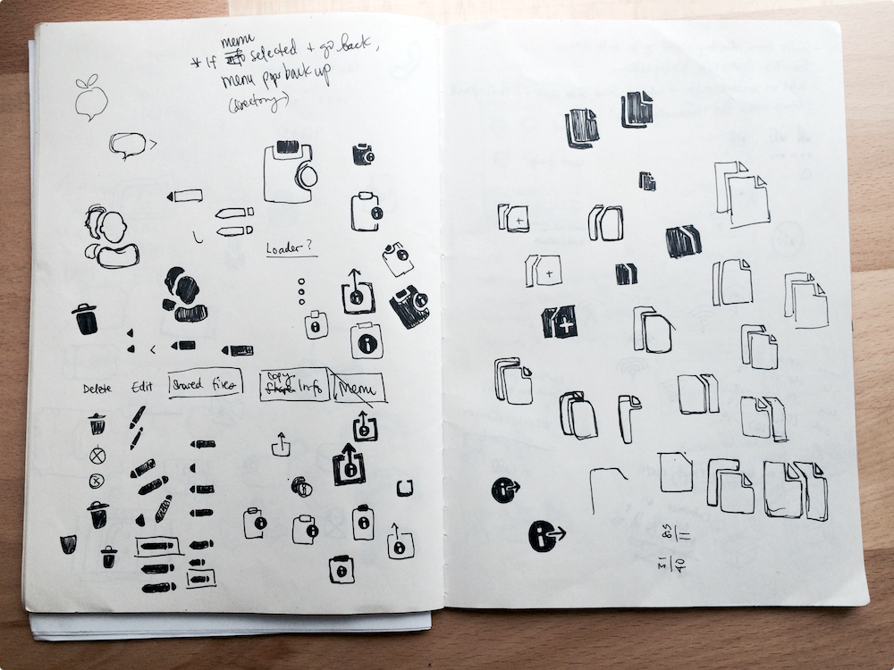
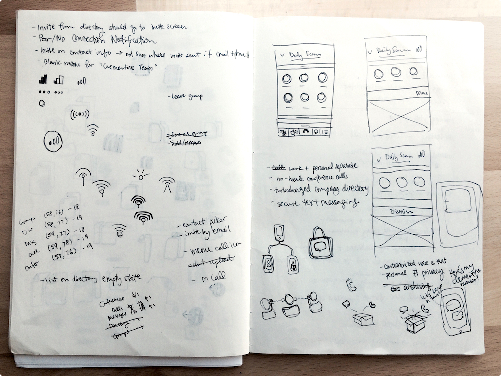
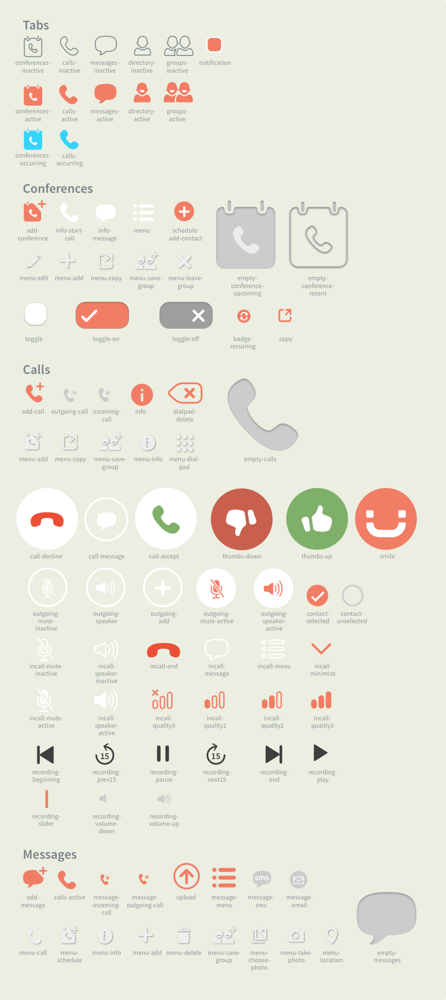

Iconography
Company
Clementine, a conference call and messaging app for enterprise. Acquired by Dropbox in 2015.
Responsibilities
I created a new icon set to bring visual consistency throughout the app and promote a greater sense of trust within our customers.
Taking Stock
Several feature sprints at Clementine had resulted in icon bloat, with different icon styles cobbled together each time a new feature required them.
We needed a complete overhaul of our iconography to reflect the Clementine brand. I chose three words that reflected our product values and aimed for a personable style to align with them.
Clementine Brand Traits
trustworthy · friendly · secure
Inspiration
For inspiration, I looked mainly to enterprise and B2B products that focused on communication and productivity, as well as products that relied heavily on icons to represent a wide range of concepts and actions.

Sketching
While initially discussing the icon redesign with the Clementine team, a few issues came up:
- How would we distinguish icons that are related in imagery but represent different actions (e.g., “copy contact info to clipboard” vs. “share”)?
- Is there a difference between a conference call and a normal phone call to our customers?
- Since business imagery tends to be male-biased, how do we make our icons and visual design as gender-neutral and inclusive as possible?
Sketching icons with pen and paper allowed me to explore these issues quickly and run my ideas by the design and product teams frequently.


Testing
I assembled the first pass at the redesigned icons into their appropriate screens by overlaying them on app screenshots. This made it easy to get feedback since everything was contextualized with real content. The mockups made it clear exactly where the icons and app needed visual and functional improvement.
From this lightweight prototyping and testing, we learned that the icons for groups, empty states, and invite icons needed more clarity since they were most easily confused with other actions. A few iterations can be seen below.
I also took the time to decrease our icon bloat. For example, the conference scheduling screen had icons in almost every entry field. This cluttered a screen that already overloaded a user with multiple form inputs. Moreover, the icons didn’t add information that the text labels weren’t already providing.
Handoff
An important part of the icon redesign process was ensuring assets would be easy to find and replace if any further iterations were done. It was also important for our engineers to be able to quickly and easily find the assets they were looking for since we were replacing over 100 icons at once.
I reorganized our asset library by
- Prefixing asset names in the same tab group. For example, the names of all assets that were unique to the Messages tab began with “message-”.
- Making sure icons that shared similar forms had the same subname. For example, all icons with a speech bubble had the word “message” in their file names.
- Creating a reference sheet (excerpt below) with asset names and organized by file structure in the library for easy reference. This also made it easy to quickly edit and export assets whenever needed.

The New Icons
The final set I created came out to over 100 icons, with even more for the desktop app. It primarily used Clementine’s orange and grays, while the app’s previous icons relied too much on our secondary color palette to provide visual contrast.
Results
We heard back from our customers, who were overwhelmingly positive in their feedback. They said that the new icons improved the look of the app, and they felt more confident navigating and taking action throughout the app.
Along the way, I reorganized our asset library to help our engineers build faster and better. It also made it faster for the design team to find and share assets.
I also made the three brand words I relied on at the start of the project (trustworthy, friendly, secure) a key part of our product. These words were the way we began presenting our product to Clementine’s customers and potential investors.